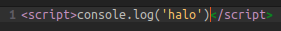
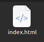
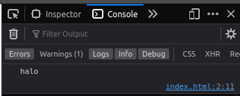

🚀 intinya: kita bisa liat output program kita.
Steps
- Buka text editor
-
Buat opening script tag:
<script>
🍪 Makanan! mental model nulis tag HTML - Buat closing script tag-nya:
</script>
Jadi gini:<script></script> -
Arahin cursor text editor ke dalem burger script terus isi pake:
console.log('halo')
Jadi gini:<script>console.log('halo')</script>
 -
Simpen filenya jadi HTML. Cari menu "Save as..." terus di belakang nama kasih format HTML gini:
.html
Contoh:index.html
 - Buka filenya di browser. Biasanya tinggal double-click aja.
- Buka devtools di browser (inspect). Biasanya pencet
F12 -
Harusnya muncul "halo" di dalem console

Selamat! Kita udah bisa bikin file HTML dan logging!